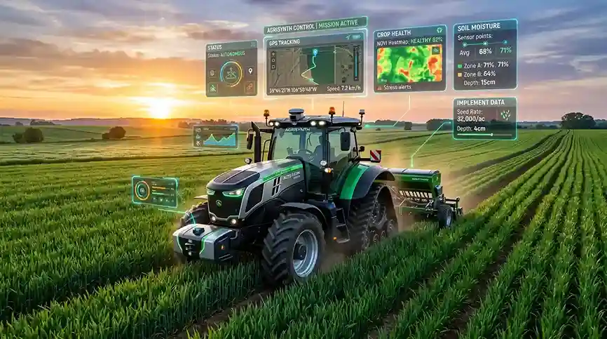
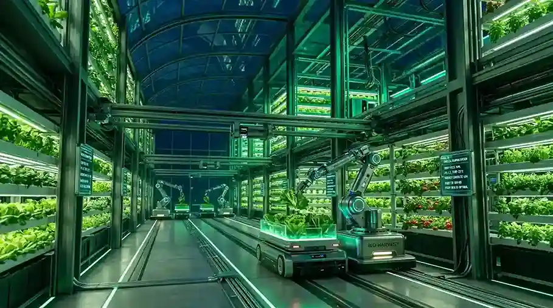
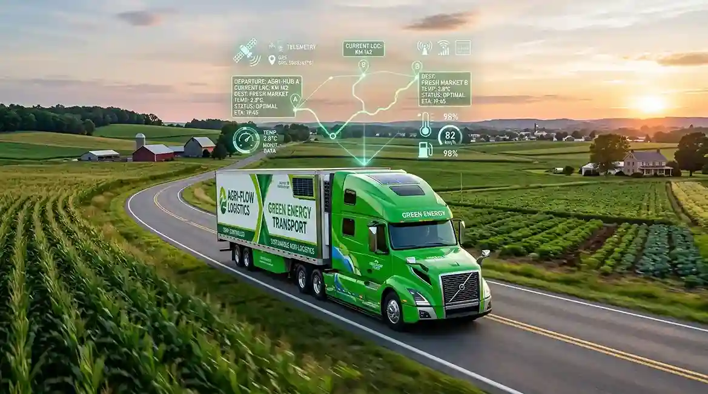

🛰️
IoT Telemetry Pulse
Sensor telemetry streamed every 10 seconds mapping soil moisture, solar radiance, and canopy index directly to your phone.
01Stackly plugs into your smart fields, cold-chain fleets, and distribution hubs to answer the one critical question — where is your fresh produce & what is its exact quality score?

Enter any crop batch or refrigerated container ID to inspect real-time freshness telemetry and GPS location.
Try sample IDs: AGRI-88210, CROP-99412 or FARM-33104
Switch between interactive modules to view how telemetry flows from sensor to warehouse.

Wireless sensors monitor soil matrix potential, NPK values, and ambient air moisture 24/7 to adjust hydroponic micro-nutrients automatically.
Explore Solutions →Stackly unites local growers, logistics operators, cold storages, and wholesale buyers into one transparent ecosystem. Prevent spoilage before microclimate shifts impact your yield.
Real-time ground sensors stream soil pH, moisture, and temperature continuously.
GPS tracked refrigerated vans maintain strict temperature thresholds from harvest to store shelf.
AI algorithms forecast yield dates and market demand spikes to maximize crop profit margins.

Six unified tech layers that turn guesswork into guaranteed fresh deliveries.
Sensor telemetry streamed every 10 seconds mapping soil moisture, solar radiance, and canopy index directly to your phone.
01Autonomous tractor guidance and transport vehicle routing tuned to optimize fuel consumption and transit time.
02Automated alerts notify drivers and operators if storage temperature drifts beyond 0.5°C tolerance levels.
03Cryptographically verified origin certificates giving consumers 100% confidence in organic and fair-trade compliance.
04Predict optimal harvest windows up to 14 days in advance using satellite spectral index imagery and historical weather models.
05Bypass redundant middlemen and trade produce directly with accredited wholesalers, supermarkets, and food processors.
06See how much revenue Stackly Agri preserves by eliminating harvest spoilage and optimizing cold-chain logistics.
✓ Based on 75% spoilage reduction with IoT telemetry